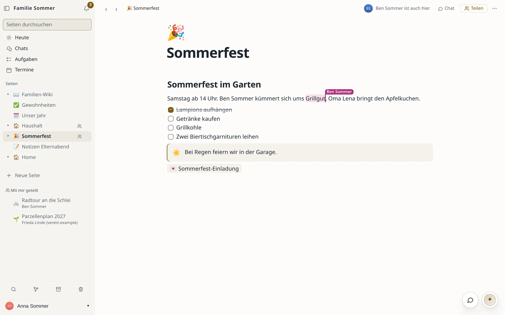
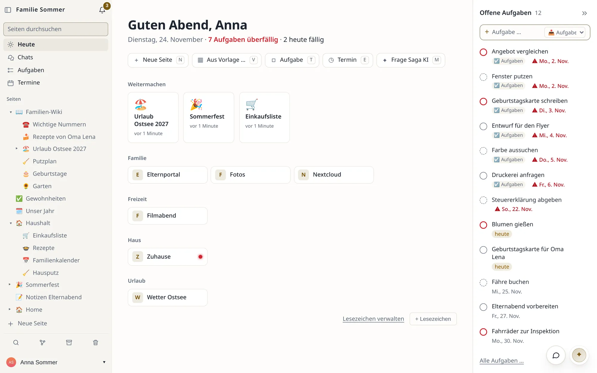
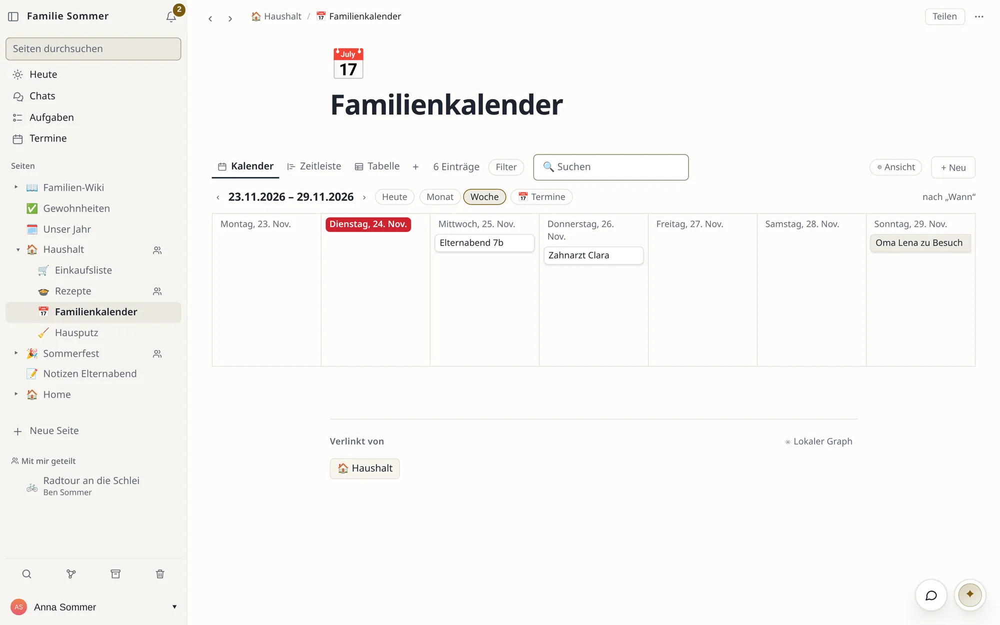
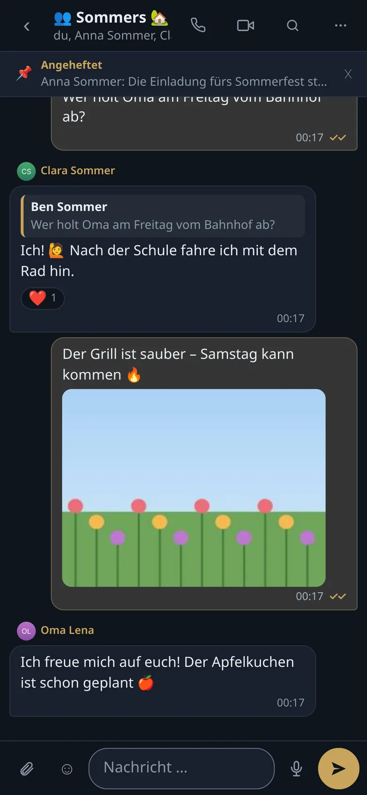

Tu propio servidor para páginas, chat y llamadas
Saga lleva páginas, bases de datos, chat, llamadas, calendarios y tareas a tu propio servidor: para tu familia, tu asociación o tu equipo, con apps para el móvil y el escritorio.
- Un dominio, solo el puerto 443
- Docker Compose
- Chats y llamadas cifrados de extremo a extremo
Novedades de Saga 2.5
Llamadas a través de tu propia dirección
Las llamadas pasan ahora por un nodo integrado, el editor trabaja en directo con otras personas y los chats pueden mucho más; además, subpáginas, sellos, portadas y widgets para tus páginas.
Llamadas con GjallarhornExperimental
Saga trae su propio nodo multimedia. Funciona detrás de cualquier proxy inverso con soporte de WebSocket, a través de tu dirección normal de Saga: sin segundo nombre y sin otro puerto.
- Llamadas individuales y en grupo con vídeo, audio y pantalla compartida; en el lanzamiento, hasta 4 participantes o dispositivos
- Convierte una llamada individual en grupal sin que se corte la conversación
- Añade personas, incluso de fuera del chat; quien no contesta aparece en «No están» con «Volver a llamar»
- Cambia o añade dispositivos: pasa la llamada del móvil al portátil o añade el portátil solo para compartir pantalla
- Cifrado de extremo a extremo, también a través del nodo
Gjallarhorn es experimental en 2.5. Safari y los navegadores de iPhone/iPad todavía llaman de forma directa o mediante TURN; las apps y la app de Mac usan el túnel a través de la dirección de Saga.

Escribir juntos, en directo
El nuevo editor predeterminado (Tiptap) muestra al instante lo que escriben los demás y sus cursores en cuanto el administrador activa la edición en directo, incluso con personas de servidores conectados.
- Menciones de personas, fechas y recordatorios con @
- Bloques sincronizados: un mismo contenido en varios lugares
- Tablas, código, fórmulas, Mermaid, columnas y multimedia directamente en el texto

Chats que hacen más
Los chats modernos (nivel 3) son ahora la opción predeterminada: siguen cifrados de extremo a extremo y traen todo lo que necesitas a diario.
- Reacciones, respuestas y edición, formato y @menciones
- Mensajes de voz de hasta 15 minutos
- Fija mensajes y chats, silencia durante un tiempo, marca como no leído
- Grupos con administradores, imagen y descripción, contactos y denuncias a los administradores

Subpáginas dentro de la página
Las subpáginas aparecen en su página madre, como lista o como galería con portadas.
Sellos como iconos
36 sellos de Saga en tres colores junto a los emojis, para páginas, bases de datos y filas.
Galería de portadas
100 imágenes del elfo de Saga en ocho grupos y una portada aleatoria para las páginas nuevas.
Widgets y gráficos
Widgets rediseñados (cuenta atrás, progreso, cifra clave, hábitos, tiempo) y gráficos a partir de bases de datos.
Mudarse es fácil
Importa desde Notion, Trilium, Markdown/Obsidian y CSV; exporta como CSV y Markdown.
App de Mac sobre la web
La app de escritorio para Mac muestra la interfaz web de tu servidor, con notificaciones, widgets y túnel para las llamadas.
Todos los cambios (en alemán) Actualizar desde 2.3/2.4 (en inglés)
Listo en pocos minutos
Basta con un servidor con Docker
Saga funciona con Docker Compose. Desde fuera solo necesitas un dominio y el puerto 443 en tu proxy inverso; las llamadas siguen el mismo camino.
# descargar y configurar git clone https://github.com/yggdrasil-sh/saga.git && cd saga cp .env.example .env # en .env: BASE_URL, SECRET_KEY, POSTGRES_PASSWORD docker compose pull && docker compose up -d # primera contraseña de administrador docker compose logs saga | grep Admin-Konto # actualizar más adelante (Saga hace antes una copia de seguridad) docker compose pull && docker compose up -d

- IniciarDescarga la imagen e inicia: Saga escucha en el puerto 8080 y el área de administración en el 8081 (solo local).
- Proxy delanteUn dominio con HTTPS en el puerto 443 apunta a Saga. En Nginx Proxy Manager activa «Websockets Support»; Caddy y Traefik lo hacen solos.
- ConfigurarCrea cuentas, grupos y servicios en el área de administración; si quieres, LDAP o SSO. En «Llamadas», «Comprobar ahora» prueba el camino a través del proxy.
- Conectar las appsInicia sesión con un código QR desde «Apps y dispositivos». Listo.
Todo en un solo lugar
Cuaderno, página de inicio y chat familiar en uno
Sin nube y sin suscripción: cada persona tiene su propio espacio privado y comparte lo que quiere compartir.
Hoy
La página de inicio te recibe con lo que viene: tareas pendientes, eventos, páginas abiertas hace poco y mosaicos de tus servicios, visibles según tus grupos.

Páginas
Bloques, subpáginas, plantillas, versiones, comentarios y exportación a Markdown, con búsqueda rápida y árbol de páginas.
Bases de datos
Tabla, tablero, lista, galería, calendario, línea de tiempo y gráfico, con fórmulas, resúmenes, relaciones y filtros.
Calendarios y tareas
Calendarios CalDAV (p. ej. Nextcloud, Radicale) y tareas desde bases de datos, con prioridad y repetición.
Asistente de IA
Opcional, con un servicio compatible con OpenAI que tú elijas: consulta tus páginas, cita las fuentes y te ayuda a escribir.
Federación
Los servidores de Saga se conectan entre sí: comparte y edita páginas entre servidores, chatea y llama.
Compartir y publicar
Comparte con personas y grupos (leer, comentar, editar) o publica páginas que cualquiera puede leer sin cuenta.
Copias y Nextcloud
Copias de seguridad diarias cifradas en S3, en una carpeta o en Nextcloud, y archivos de Nextcloud dentro de las páginas.
LDAP y SSO
Cuentas locales, LDAP/Active Directory y OpenID Connect; acceso a los servicios mediante grupos.
Cinco idiomas
Interfaz y apps en alemán, inglés, español, ruso y tailandés, a elegir por cuenta.





Las capturas muestran la interfaz en alemán de un servidor de demostración.
Apps
Para llevar y para el escritorio
Saga funciona en cualquier navegador actual, también en el móvil. Además hay apps en las que inicias sesión con un código QR.



iPhone & iPad
App nativa con widgets. Aún no está en la App Store: compílala tú.
Android
App nativa como APK en las versiones de GitHub, Android 8 o posterior.
Mac
App de escritorio que envuelve la interfaz web, firmada y notarizada (macOS 26 o posterior).
Linux
App de GNOME como RPM (Fedora, RHEL 10) y como Flatpak para cualquier distribución.
Seguridad y privacidad
Tus datos se quedan contigo
Saga funciona en tu servidor. Sin rastreo ni telemetría: Saga solo habla con los servicios que tú configuras (y, si quieres, con GitHub para buscar actualizaciones).
Cifrado de extremo a extremo
Chats y llamadas cifrados de extremo a extremo, también entre servidores conectados y a través del nodo.
Inicio de sesión seguro
Llaves de acceso y apps de autenticación, 2FA obligatoria para administradores o para todos. Los intentos fallidos se frenan; las cuentas nunca se bloquean.
Copias con plan
Diarias, cifradas con age, retención 7/4/6 y restauraciones de prueba; además, una copia antes de cada actualización y copias personales para cada persona.
Administración aparte
Puerto propio, accesible de fábrica solo en local, con su propio inicio de sesión y diagnóstico.
Tú decides
Federación, chat, llamadas y libreta de direcciones se pueden desactivar por servidor conectado; confirmaciones de lectura y «en línea», por persona.
Código abierto
AGPL-3.0, todo en GitHub: servidor, apps y las herramientas con las que se hicieron estas capturas.